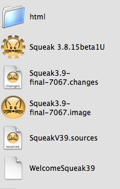

Introduction
An activity I enjoy is writing simple games in Squeak. I also enjoy sharing this powerful development environment with interested developers. This is one of the reasons I write these tutorials.
For this development example I'd like to try something different and take the student through the process of writing a game in Squeak. Proceed linearly through the example. The development process described here will be very specific to the way I work. Consequently, you will see how I encourage organization of files and other processes as part of Squeak development. In a very real way, Smalltalk development is a personal expression.
Let's assume the student has downloaded Squeak and has some understanding of the Smalltalk programming language.
This work make seem tedious at some points. Every step of the process is described in detail. Even when I made mistakes. The idea here is to show how natural it is to iterate over design and implementation and the confidence that builds with test driven development.
Frequently the pages of the tutorial will be filled with screen-shots of browser windows. Although this may tend to be distracting for some readers, whenever I'm introducing something for the first few times the class hierarchy browser is shown so that the student can examine carefully and compare it to what they are doing in case there are mistakes. After progressing through a lot more of the tutorial it's assumed this convention is no longer necessary and descriptions with code samples are given instead.
The tutorial begins with a fresh download of Squeak 3.9. I'm doing this development on a Macintosh running OS X. With the exception of the host Operating System look-and-feel, and a few different install files, there should be no difference for a student working with other supported Squeak systems. Here's my Squeak development folder's contents at the beginning of this tutorial.
The "html" folder is where I develop the html pages for this tutorial. It can be ignored.